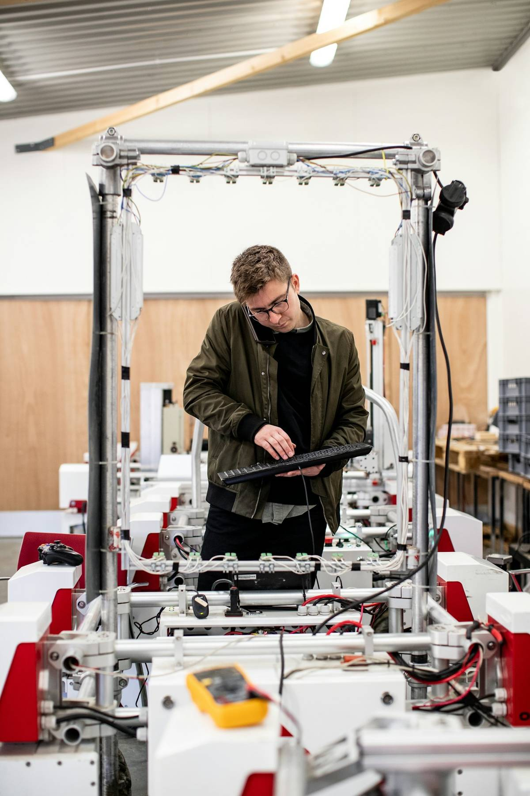
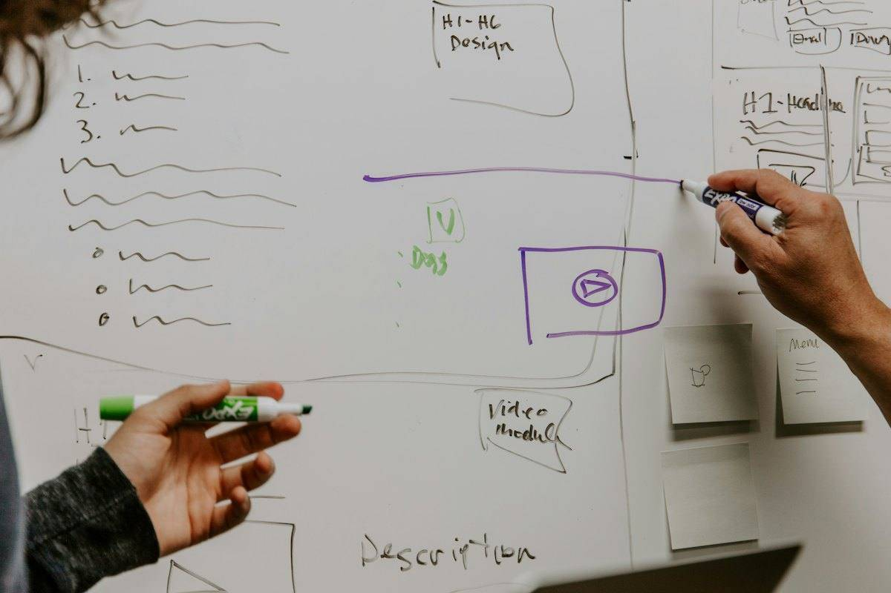
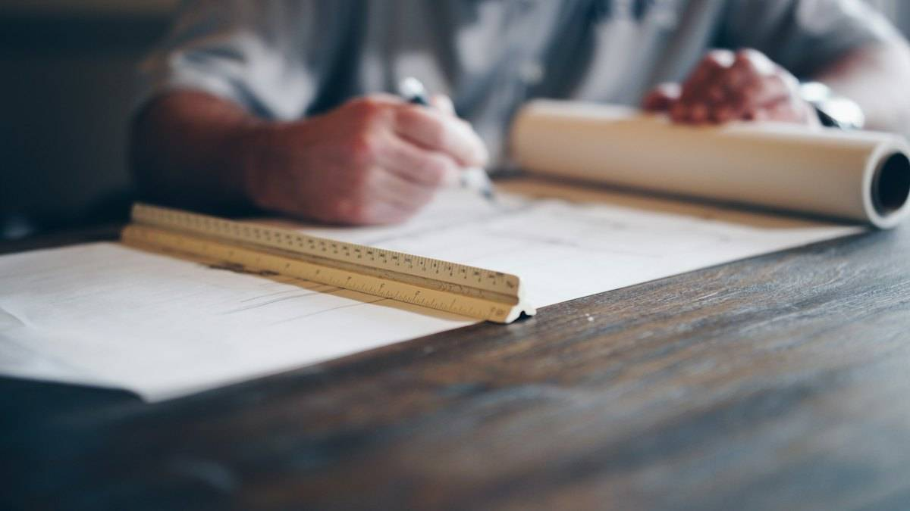
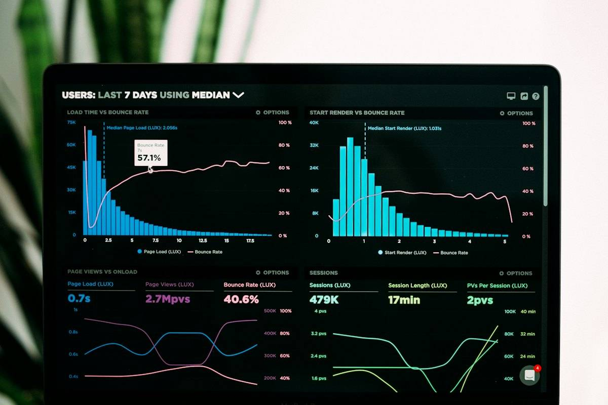

일하는 방식
분야가 달라도 순서는 같습니다

1현장 진단
현행 공정도 · 문제 목록

2문제 정의
문제정의서 · 우선순위표

3실행 설계
실행 로드맵 · KPI 정의서

4성과 검증
성과 보고서 · 운영 기준
현장 증상 찾기
분야를 몰라도 괜찮습니다
㈜A.O.M종합건축사사무소
제약공장 GMP 대응 설계·감리. 제30회 경기도 건축문화상 금상.
자주 묻는 질문
Q어떤 기업이 주로 상담하나요?
소공인부터 중소 제조기업까지, 스마트제조·AX 도입, ISO 인증, ESG 공급망 대응, 공장 설계와 인증이 필요한 기업이 주로 찾습니다.
Q상담 전에 무엇을 준비하면 좋을까요?
대략적인 공정 순서, 작업일보나 불량기록 한두 장, 지금 쓰는 시스템 화면 캡처면 충분합니다. 이 홈페이지의 자가진단 결과를 가져오시면 첫 상담이 훨씬 빨라집니다.
Q스마트공방·스마트공장 지원사업 계획서도 도와주나요?
사업계획 수립을 돕습니다. 문제정의, 도입 적정성, 자부담 조달, 사후관리 계획이 한 줄로 이어지게 다듬습니다. 공정성을 위해 평가를 맡은 사업·기업과는 겹치지 않게 진행합니다.
QISO 컨설팅과 인증심사를 함께 받을 수 있나요?
한 기업에 대해 같은 사람이 컨설팅과 인증심사를 함께 할 수 없습니다. 심사의 공정성 원칙 때문입니다. 체계 구축은 컨설팅으로, 인증심사는 독립된 인증기관에서 받습니다.
QAI는 처음인데 무엇부터 해야 하나요?
도구를 고르기 전에 시간이 가장 많이 드는 업무 하나를 정하고, 그 업무의 흐름을 그리는 것부터 시작합니다. AI·AX 로드맵 1단계의 점검 질문으로 바로 해 보실 수 있습니다.
Q홈페이지 진단 결과는 저장되나요?
자가진단과 계산기 결과는 저장되지 않고 개인정보도 받지 않습니다. 로드맵에서 체크한 내용은 쓰시는 기기의 브라우저에만 남습니다.
막힌 곳 하나만 알려 주세요
공정 사진이나 작업일보 한 장이면 충분합니다. 거기서부터 함께 그립니다.
010-2244-3100